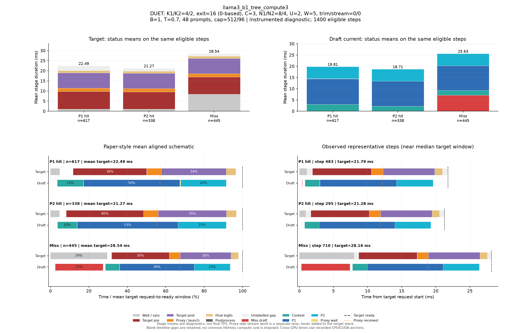

DUET: K1/K2=4/2, exit=16 (0-based), C=3, N1/N2=8/4, U=2, W=5, trim/stream=0/0
| Pass | 용도 | N | B | T | Seed | AL* | Cache hit | TPS* | Raw TPS |
|---|---|---|---|---|---|---|---|---|---|
| 0 | profile-diagnostic | 48 | 1 | 0.7 | 5100 | 2.707 | 68.25% | 97.99 | 96.62 |
Input/output cap: 512/96 · GPUs: 4,5 · draft seed: 0 · source: 58326e9c3f53374028d73f93e3fe738a52608938
PNG · 벡터 PDF · 원본 결과 JSON
세부 trace: 1400 eligible steps. Target 원본 · Draft 원본
제외 수: {"initial": 19, "output_boundary": 45, "capture_or_next": 10}
왼쪽 아래는 상태별 평균 정렬 schematic, 오른쪽 아래는 실제 대표 step입니다. %의 분모는 각 상태의 평균 target request→ready 시간이며 phase overlap은 별도 lane에 표시합니다.

{
"args": {
"target": "/data/chokwans99/models/layerskip-llama3-8B",
"draft": "/home/chokwans99/models_mlsys/Qwama-0.5B-Instruct",
"mode": "duet-tree",
"batches": [
1
],
"temperatures": [
0.7
],
"seeds": [
5100
],
"target_tp": 1,
"prompts": "/home/chokwans99/PSD-mlsys-coverage/results/mlsys_coverage/round5/tuning48.json",
"limit": 0,
"max_new_tokens": 96,
"max_model_len": 2048,
"input_cap": 512,
"k1": 4,
"k2": 2,
"draft_fan_out": 3,
"proxy_fan_out": 1,
"p1_tree": true,
"p1_verify_nodes": null,
"p2_verify_nodes": null,
"exit_layer": 16,
"p1_nodes": 8,
"p2_nodes": 4,
"tree_width": 3,
"p1_roots": 2,
"p2_budget": null,
"tree_root_count": null,
"tree_beta": 0.5,
"tree_proxy_threshold": 0.01,
"tree_conf_threshold": 0.03,
"root_source": "complement",
"root_normalization": "full",
"root_overlap_mix": 0.25,
"memory_fraction": 0.45,
"ignore_eos": false,
"greedy_only": false,
"audit_preemption": false,
"ragged_limits": false,
"tree_calibration_dir": null,
"preflight_test": null,
"output": "/home/chokwans99/PSD-mlsys-coverage/results/mlsys_coverage/round5/llama3_b1_tree/llama3_b1_tree_compute3.json"
},
"engine_kwargs": {
"num_gpus": 2,
"max_num_seqs": 1,
"max_model_len": 2048,
"max_num_batched_tokens": 2048,
"gpu_memory_utilization": 0.45,
"speculate": true,
"draft_async": true,
"greedy_only": false,
"jit_speculate": true,
"speculate_k": 6,
"async_fan_out": 4,
"duet_p1_tree_policy": "on",
"duet_p2_tree_policy": "on",
"draft": "/home/chokwans99/models_mlsys/Qwama-0.5B-Instruct",
"duet_enabled": true,
"duet_exit_layer": 16,
"duet_phase1_k": 4,
"duet_phase2_k": 2,
"duet_draft_fan_out": 3,
"duet_p2_tree_max_nodes": 4,
"duet_p2_tree_verify_nodes": 4,
"duet_p1_tree_max_nodes": 8,
"duet_p1_tree_verify_nodes": 8,
"duet_tree_c_tensor": 3,
"duet_p1_roots_per_position": 2,
"duet_p2_budget": null,
"duet_tree_root_count": null,
"duet_tree_beta": 0.5,
"duet_tree_proxy_threshold": 0.01,
"duet_tree_conf_threshold": 0.03,
"duet_root_source": "complement",
"duet_root_normalization": "full",
"duet_root_overlap_mix": 0.25
},
"env": {
"CUDA_VISIBLE_DEVICES": "4,5",
"SSD_CUDA_ARCH": "8.9",
"SSD_ATTN_BACKEND": "auto",
"SSD_DIST_PORT": "30803",
"OMP_NUM_THREADS": "4",
"SSD_SEED": "0",
"SSD_CHAIN_PROXY_GRAPH": "1",
"SSD_FAST_VERIFY": "1",
"SSD_BATCHED_PROXY_GRAPH": "1",
"SSD_DUET_EXIT_REPLICA": "0",
"SSD_ASYNC_PROXY_SEND": "1",
"SSD_PROXY_STREAM": "0",
"SSD_BATCHED_TREE": "1",
"SSD_TREE_EXPANSION_POLICY": "reach_gain_frontier",
"SSD_TREE_REACH_CALIBRATION": "/home/chokwans99/PSD-mlsys-coverage/results/mlsys_coverage/round4/calibration/reach.json",
"SSD_TREE_GAIN_CALIBRATION": "/home/chokwans99/PSD-mlsys-coverage/results/mlsys_coverage/round4/calibration/gain.json",
"SSD_DUET_MISS_K": "4",
"SSD_TREE_FUSED_MATH": "1",
"SSD_BATCH_TREE_BULK_EXPORT": "1",
"SSD_TREE_PARALLEL_INSERT": "0",
"SSD_PROFILE_DUET": "1",
"SSD_PROFILE_DUET_MAX_EVENTS": "100000",
"SSD_TREE_SHAPE_METRICS": "1",
"SSD_PROFILE_DIR": "/home/chokwans99/PSD-mlsys-coverage/results/mlsys_coverage/round5/profiles/llama3_b1_tree_compute3",
"SSD_HF_CACHE": "/data/chokwans99/models",
"SSD_DATASET_DIR": "/home/chokwans99/PSD-mlsys-coverage/results/mlsys_coverage/round5"
},
"effective_features": {
"fast_verify": true,
"batched_proxy_graph": true,
"exit_replica": false,
"jit_speculate": true,
"duet_jit_short": true,
"miss_depth": 4,
"miss_width": 1,
"tree_fused_math": true,
"tree_parallel_insert": false,
"bulk_export": true
},
"resolved_env": {
"SSD_CUDA_ARCH": "8.9",
"SSD_ATTN_BACKEND": "auto",
"SSD_DIST_PORT": "30803",
"SSD_SEED": "0",
"SSD_CHAIN_PROXY_GRAPH": "1",
"SSD_FAST_VERIFY": "1",
"SSD_BATCHED_PROXY_GRAPH": "1",
"SSD_DUET_EXIT_REPLICA": "0",
"SSD_ASYNC_PROXY_SEND": "1",
"SSD_PROXY_STREAM": "0",
"SSD_BATCHED_TREE": "1",
"SSD_TREE_EXPANSION_POLICY": "reach_gain_frontier",
"SSD_TREE_REACH_CALIBRATION": "/home/chokwans99/PSD-mlsys-coverage/results/mlsys_coverage/round4/calibration/reach.json",
"SSD_TREE_GAIN_CALIBRATION": "/home/chokwans99/PSD-mlsys-coverage/results/mlsys_coverage/round4/calibration/gain.json",
"SSD_DUET_MISS_K": "4",
"SSD_TREE_FUSED_MATH": "1",
"SSD_BATCH_TREE_BULK_EXPORT": "1",
"SSD_TREE_PARALLEL_INSERT": "0",
"SSD_PROFILE_DUET": "1",
"SSD_PROFILE_DUET_MAX_EVENTS": "100000",
"SSD_TREE_SHAPE_METRICS": "1",
"SSD_PROFILE_DIR": "/home/chokwans99/PSD-mlsys-coverage/results/mlsys_coverage/round5/profiles/llama3_b1_tree_compute3",
"SSD_HF_CACHE": "/data/chokwans99/models",
"SSD_DATASET_DIR": "/home/chokwans99/PSD-mlsys-coverage/results/mlsys_coverage/round5",
"SSD_FORCE_SPLIT_K1K2": "1",
"SSD_DUET_JIT_SHORT": "1",
"SSD_SHM_NAME": "ssd_2557186"
},
"runtime_source_sha256": {
"ssd/ssd/__init__.py": "f1a221b38f55b42ef0619cba48a411acbbd1965c4845b4643f77443b7ce77950",
"ssd/ssd/config.py": "865ddb5e09ec11f4bc8511dad3f5abad39a6ab412cf0bbcd6213179b5245fa31",
"ssd/ssd/engine/block_manager.py": "05d873619b419d31f47b4be4025bc7c9f11759f5f0bc3f65fbff3a1e8f94660a",
"ssd/ssd/engine/draft_runner.py": "98e73876bb2d75d6ba4baa0e2e7d67080bb39ffd62b83224c4a3aab9b95c3af9",
"ssd/ssd/engine/helpers/batch_tree_common.py": "739feeb975c20d0adbdae51735b8983aa6cae8b59d6237b285db0c766d558f27",
"ssd/ssd/engine/helpers/batch_tree_draft.py": "f361030685350183884cc55b9058945515bb00da53fc86541f7902bfd2138528",
"ssd/ssd/engine/helpers/batch_tree_forward.py": "0c6079d2bdbf7ecc000b2a98b94b49b1942939d34ada80b15f57510de8a20940",
"ssd/ssd/engine/helpers/batch_tree_inputs.py": "c0a05d13ba0e63ecbc920425ddd6a98dc60001d93d73085e75d2d4a9b110a066",
"ssd/ssd/engine/helpers/batch_tree_roots.py": "ad3c4e772392c1043284ac4912d606543f3fd76167135b73e4f72a700e6820c7",
"ssd/ssd/engine/helpers/batch_tree_sampling.py": "46f36658cb189bc080ae0d4b8561f84662290facacccf6600f129eb6e93ee66b",
"ssd/ssd/engine/helpers/batch_tree_verify.py": "2da945efe3ba4b2673377a2f5c497528ab0c6cf4d7fd7edfbdb23b6c9c619ede",
"ssd/ssd/engine/helpers/batched_proxy.py": "6ed4f9b85ff8cf9c24b7ad43a1b7377d08123eeef5307366a373dacda184da86",
"ssd/ssd/engine/helpers/batched_tree_executor.py": "098d64cad2d20d96091631f6bc91da73b1e893ec400c3431a4ed68d007a9ef45",
"ssd/ssd/engine/helpers/cudagraph_helpers.py": "0436aec61d05d0b79696a48665042e364f3f4c50d853b68dc424e435b54be0c9",
"ssd/ssd/engine/helpers/e0_trace.py": "23ecd9bce2587cbef3f99c8894964c0d9642d33d372bd7be4954a5a2840a142e",
"ssd/ssd/engine/helpers/mask_helpers.py": "8ada4e709a6ab310ee920a7176b3684f89860022fc659442f6cb02ed5fb87d88",
"ssd/ssd/engine/helpers/p1_tree.py": "f48ae6b01e593d2598262b34007a6b58dde9e57e94138dde62f81d5526637398",
"ssd/ssd/engine/helpers/p2_tree.py": "73b0a512d834ab3a4608d9cd898b13b32630dd3b914b49e753c1116ac0640b41",
"ssd/ssd/engine/helpers/p2_tree_executor.py": "cfb04f959fd08baf3819a688a907cac4e3071a2727085ea08ca089b50a21e82e",
"ssd/ssd/engine/helpers/packed_tree_forward.py": "b903d6fe4d1fe18f95f6540f488acf40d469154100239429256eace61b1d7e76",
"ssd/ssd/engine/helpers/packed_verify.py": "a50ff24e93324840783b60102bfaeb3786711f05f64bd897708c779535c1820f",
"ssd/ssd/engine/helpers/root_policy.py": "5e3a8e2f9b2fe43fec52eb9e80fe59cb0d28177122f7e75c823c5ffd20aee718",
"ssd/ssd/engine/helpers/runner_helpers.py": "bfb570d8e018ee296a6c2a8c3c9e75919fd0eb1beb288ceb80121ad116419bf2",
"ssd/ssd/engine/helpers/speculate_types.py": "2929b5f3a176d04b6a4b01f092b224ad733dfda10a647bb73801cd346441ae91",
"ssd/ssd/engine/helpers/tree_expansion_policy.py": "47f818d1b8f284e56813af294723f6a934c3da0502b9ae4e611b54ba6fb85dac",
"ssd/ssd/engine/helpers/tree_fused_math.py": "930a1215363a3b6f878cbc4a71c3f59293f46aa2eab3c4938e5bb51e95868d2e",
"ssd/ssd/engine/helpers/tree_gain_allocation.py": "6f32c6a7b69272c1b42992d95c546bfd3980ccd71af3b3346e9df61977907b6a",
"ssd/ssd/engine/helpers/tree_host_topology.py": "86d0deab4da2932540a108c4c2b3560b8634837e71ba23783375c2001e4cf81c",
"ssd/ssd/engine/helpers/tree_layout.py": "4e5e47c54a4efd5a30ae8c528e1d2d9493d12aa5605c0e65c2f86ba874805be1",
"ssd/ssd/engine/helpers/tree_rerank_gpu.py": "e4a8bff8828f983d6eb407504f87f2a9edf08a1750449fe46565e661f892b734",
"ssd/ssd/engine/helpers/tree_topology_gpu.py": "3a6cf8796faabbe8adef56deedf8956c1cf252a31e0491f3b71a8544bdcf89af",
"ssd/ssd/engine/llm_engine.py": "b0081876ef6470f91fa562acc0317074a85afa9aec8322182bda7749153db00f",
"ssd/ssd/engine/model_runner.py": "5fa9e910f38538c276a151113fc490be9c75ae9af2bf35ba6eaa5513b237a421",
"ssd/ssd/engine/scheduler.py": "52a36e8bb2abc26f775562a39bd95ea6cc8c70650e6193ddaa0fad762afb8ae4",
"ssd/ssd/engine/sequence.py": "6894715ef142074b118bfa3018b10826d2748518e9c8b71291064eb99fae9bd9",
"ssd/ssd/engine/speculator_async.py": "cd16395d5e5d7380d29f5a27e1495b6a40758c0452ce2cb40d996e2c3271c114",
"ssd/ssd/engine/speculator_sync.py": "30487afa7f5027735ebd752ca1a53003f1d56350f503ea91931ef64e7aab115e",
"ssd/ssd/engine/step.py": "525d3022561c9eee96ec076032bb27e281af744feb739ddc17e52344a9cafe8f",
"ssd/ssd/engine/verifier.py": "f6795547f278628312d2dd5ab0a28e9f34489b8e6d02038566a65fa3190a0928",
"ssd/ssd/layers/activation.py": "13d88b460e7610df28c6a7c719dd8bf21c5c59ae0f85c94d505d499215618a82",
"ssd/ssd/layers/attention.py": "bbafa69d9b52dedf81542f2c3227b7f061de11c679a6681a16b0c137ccfc672b",
"ssd/ssd/layers/embed_head.py": "b896a56b908d75c8f30462b0b1a4ce634276ddb41165fdaa0220c55a2ddf7257",
"ssd/ssd/layers/fi_attn.py": "4b0a275d020c1c3ce37f4e2a6c04bff12577d6f11feec7d79959652300fc9a0c",
"ssd/ssd/layers/layernorm.py": "a076c8d2e31d2597119d8504a69afd8711b41a29b5ccb7e1bf111a6c7277400e",
"ssd/ssd/layers/linear.py": "82c096262013516c5f0a43f7c28f23aa6db6b14f52cbe1ce1dacc5f9d5c4b0b6",
"ssd/ssd/layers/rotary_embedding.py": "1bcca21cf5e4d81c11a5c55d59a6033874c4e6a0003cc4ae8e1aa6165976a723",
"ssd/ssd/layers/sampler.py": "df22591a229ae5c2f62d4797707470ebccb8e55f7064577bc24a656ed797f213",
"ssd/ssd/llm.py": "496950f31428f674b70e8e137e029aa16dd82fdc8d8b8cc76f9ebdce86f7f653",
"ssd/ssd/models/eagle3_draft_llama3.py": "0d6e713a419cf884fc85984f9a2a6de520119032075a7c99158e0df7e2faca84",
"ssd/ssd/models/llama3.py": "ac801bd73e999f04a6fc862ca1d49bc94c88315456cfb6cb1215a503bcc5e07d",
"ssd/ssd/models/qwen2.py": "6804e3662a173368632e5f05b9893cc0cd28a61ac9bd25dbe8cd6f387ca0d1ca",
"ssd/ssd/models/qwen3.py": "535495bf69933fd9c677275453b801189e2c3c78a94fcc5133fc65b88c9f69c7",
"ssd/ssd/paths.py": "72c52420daaf6d457c60235617efc3f8b1e3ae208a35f3bc45438adc9d7e01ac",
"ssd/ssd/quant/__init__.py": "a69f0de0a516ba2bf9e13680b75b8f5d538c2eb281b095662ed1515f8b0f8698",
"ssd/ssd/quant/adapter.py": "fbb1ce4a198a585c31b0102555d1f84d18b09b0de1b90a5808d93ec8ff7ac271",
"ssd/ssd/quant/awq_calibrate.py": "116807eca0a3e4e001aa24a3344031416e4060a6c1b2e39f59829fba09484126",
"ssd/ssd/quant/build.py": "37f9c72ac69af213f2720c86faf380b8a46baaad0b98bf5f2e3c7fa9b3fbc43c",
"ssd/ssd/quant/config.py": "080c327b2297d0905f8fddc8d994aa7b9dc1086d7703d951471d48cea8723a1d",
"ssd/ssd/quant/importer.py": "c8990b69bc9e4e152e7e80b7f08f273c6a4652c1f7e95a8247f85e50030f4f92",
"ssd/ssd/quant/init_context.py": "6aa3dc3f6e95d8902fa7244d0010110b6fcf1ffdccedd6eaa389204339fc214f",
"ssd/ssd/quant/io.py": "f44f98a57351ff1063b7423d2f8390a565a30796fd6c3beaeaa8825f906e66b5",
"ssd/ssd/quant/loader.py": "14f901b1f53a3650be7eff497f626469e2b1fbc487202c639d33c8dd4c9047fb",
"ssd/ssd/quant/marlin.py": "4f1996e9f63d7109e92a3a7ec5350069ba67d7659f2149e99b84ca3c6626b241",
"ssd/ssd/quant/marlin_utils.py": "f64ec8d7ec8260556abd21e229567971a928882f14b93d288a6732d55c12fc90",
"ssd/ssd/quant/naming.py": "7ba73900af5e6d6fa2d1907bd2611625fc72f28a1fb9ea4834cd9a45901632d6",
"ssd/ssd/quant/pack.py": "b7dd683b7cdbfbb6f4ce1e13a51a72240a8dc3a35b7ed652dc664d26bb384711",
"ssd/ssd/quant/state.py": "82cb1050a3b1776765df7ad8f6c59c23a86ac8d1d4cc3c974cded7f8e762f806",
"ssd/ssd/sampling_params.py": "7f79868c4ca115bb18e017411a6c5545f354aa858aa0b8076aafb756d0785032",
"ssd/ssd/utils/async_helpers/async_spec_helpers.py": "0d70779098c5051fcba5d3add5ff0b7896139f1b7789babe701a8df6eaa40f24",
"ssd/ssd/utils/async_helpers/duet_policy.py": "1fb3e1ec1c41a9cda5f531f8c732b09145c7d87ea79d74c331b8176f11f22aaf",
"ssd/ssd/utils/async_helpers/nccl_pack.py": "6330e785f3e81acffe25a82061d3098f7834ad3c2d07bb071d79ed9923b18dc1",
"ssd/ssd/utils/async_helpers/tests.py": "6491ced36a2a6f06d8cf411204b1190d2ca0bc700cd0becf79c3f4cd8abcd87e",
"ssd/ssd/utils/context.py": "ce55eb45f00c91412946dd1c96f5c8f972372dd4c8069770c48e120773f301fc",
"ssd/ssd/utils/int8_debug.py": "9a71dbf2b997a9c8d9b776cc3659c8dbf32ce5411eb5cedb4a73368cee60d3d7",
"ssd/ssd/utils/loader.py": "c008eac34810772e8d9f51da896c00867481f3e1a0e6f725e0d06599c0aab59e",
"ssd/ssd/utils/misc.py": "1084b630f174d651b78b01c4ba2dff147f18d3cf52a200704b4b9eab2b72b66c",
"ssd/ssd/utils/quantize.py": "c0ee73d55f3781eba88007325d5e9e53e66ad952e0e8f19143aa8c50bc39f406",
"ssd/ssd/utils/verify.py": "0cf11b9ba19a73e9c39087fccde43071464c6f3b964e00081ebadc747ef142a4",
"ssd/ssd/utils/verify_fast.py": "23b05b7e5032fe72c8f2ef5bd7a69aa874818b08b52ea7fc0344a54c76ea28d9",
"ssd/bench/mlsys_campaign.py": "059b6316ba33e867e1fcf099a8180c186fa70b916692eca386d2a4a347b0f26f",
"ssd/bench/mlsys_coverage.py": "70b2afaf05bbbd5760c2a4f96f801976479209ca1d7a8f9eb8598139e686bdbc",
"ssd/bench/mlsys_greedy_audit.py": "b9815fd03ded7f30f7c0408629782156e73f5ceaab9f0b3b720956f5c00da141",
"ssd/bench/mlsys_preemption_audit.py": "f891ff5a69a59fb8c93e7952f9d48ac16adb7fef074763089f14d4505ecad80d",
"ssd/bench/mlsys_summarize.py": "0235aa2b56eb59c41c429351d77e90e16c52ccdf58c43e3578dd03df0f6095bd",
"ssd/bench/mlsys_tree_observer.py": "8c18248c9ef1953e2e821613099f14d155978540536939288d4fb2aa897c6263",
"ssd/bench/mlsys_verify_bench.py": "3ddc36197874d239f41a1c135570d4d7a0940d615d3d396299bae46e377bce2e"
}
}{
"groups": [
{
"status": "P1 hit",
"n": 617,
"mean_target_ms": 22.48847434431846,
"mean_decode_ms": 22.529173409943642,
"mean_intervals": [
{
"lane": "Draft current",
"label": "Context",
"start": 0.786335761581866,
"end": 3.8454043490380485
},
{
"lane": "Draft current",
"label": "Miss draft",
"start": 0.3471097602256886,
"end": 0.38508016788785615
},
{
"lane": "Draft current",
"label": "P1",
"start": 3.864987023259291,
"end": 15.12176520279586
},
{
"lane": "Draft current",
"label": "P2",
"start": 15.222979477197656,
"end": 20.58006978150898
},
{
"lane": "Draft current",
"label": "Proxy wait",
"start": 15.123465870728948,
"end": 15.221259833155035
},
{
"lane": "Target",
"label": "Final logits",
"start": 20.573231882562126,
"end": 21.690272964959785
},
{
"lane": "Target",
"label": "Postprocess",
"start": 22.47016893097802,
"end": 22.48847434431846
},
{
"lane": "Target",
"label": "Proxy / launch",
"start": 11.262542554972818,
"end": 12.969489130054146
},
{
"lane": "Target",
"label": "Target post",
"start": 12.971294263193634,
"end": 20.571381653920177
},
{
"lane": "Target",
"label": "Target pre",
"start": 2.6359123124875357,
"end": 11.260679653823086
},
{
"lane": "Target",
"label": "Wait / sync",
"start": 0.0,
"end": 1.0892834346530116
}
],
"components": [
{
"lane": "Draft current",
"label": "Context",
"mean_ms": 3.0590685874561823,
"present_steps": 617,
"population": 617
},
{
"lane": "Draft current",
"label": "Miss draft",
"mean_ms": 0.03797040766216754,
"present_steps": 617,
"population": 617
},
{
"lane": "Draft current",
"label": "P1",
"mean_ms": 11.25677817953657,
"present_steps": 617,
"population": 617
},
{
"lane": "Draft current",
"label": "P2",
"mean_ms": 5.357090304311322,
"present_steps": 617,
"population": 617
},
{
"lane": "Draft current",
"label": "Proxy wait",
"mean_ms": 0.09779396242608514,
"present_steps": 617,
"population": 617
},
{
"lane": "Target",
"label": "Final logits",
"mean_ms": 1.1170410823976589,
"present_steps": 617,
"population": 617
},
{
"lane": "Target",
"label": "Postprocess",
"mean_ms": 0.018305413340440252,
"present_steps": 617,
"population": 617
},
{
"lane": "Target",
"label": "Proxy / launch",
"mean_ms": 1.706946575081329,
"present_steps": 617,
"population": 617
},
{
"lane": "Target",
"label": "Target post",
"mean_ms": 7.600087390726544,
"present_steps": 617,
"population": 617
},
{
"lane": "Target",
"label": "Target pre",
"mean_ms": 8.62476734133555,
"present_steps": 617,
"population": 617
},
{
"lane": "Target",
"label": "Unlabelled gap",
"mean_ms": 2.332043106783924,
"present_steps": 617,
"population": 617
},
{
"lane": "Target",
"label": "Wait / sync",
"mean_ms": 1.0892834346530116,
"present_steps": 617,
"population": 617
}
],
"mean_markers": {
"Final logits": 21.690272964959785,
"Target ready": 22.48847434431846,
"Proxy received": 12.831537001716454
},
"representative": {
"step_id": 483,
"status": "P1 hit",
"target_ms": 21.791014909744263,
"decode_ms": 21.829085890203714,
"source_counts": {
"1": 1
},
"physical_queries": 9,
"max_valid_nodes": 8,
"unlabelled_target_ms": 1.66015625,
"intervals": [
{
"label": "Wait / sync",
"start": 0.0,
"end": 1.0722649097442627,
"lane": "Target",
"original_label": "target_spec_wait"
},
{
"label": "Target pre",
"start": 1.9121088981628418,
"end": 10.53125,
"lane": "Target",
"original_label": "batch_target_pre"
},
{
"label": "Proxy / launch",
"start": 10.53125,
"end": 12.240233898162842,
"lane": "Target",
"original_label": "batch_target_proxy"
},
{
"label": "Target post",
"start": 12.242187023162842,
"end": 19.837889909744263,
"lane": "Target",
"original_label": "batch_target_post"
},
{
"label": "Final logits",
"start": 19.839843034744263,
"end": 20.95703101158142,
"lane": "Target",
"original_label": "batch_target_final_logits"
},
{
"label": "Postprocess",
"start": 21.773437023162842,
"end": 21.791014909744263,
"lane": "Target",
"original_label": "target_postprocess"
},
{
"label": "Unlabelled gap",
"start": 1.0722649097442627,
"end": 1.9121088981628418,
"lane": "Target",
"original_label": "derived_gap"
},
{
"label": "Unlabelled gap",
"start": 12.240233898162842,
"end": 12.242187023162842,
"lane": "Target",
"original_label": "derived_gap"
},
{
"label": "Unlabelled gap",
"start": 19.837889909744263,
"end": 19.839843034744263,
"lane": "Target",
"original_label": "derived_gap"
},
{
"label": "Unlabelled gap",
"start": 20.95703101158142,
"end": 21.773437023162842,
"lane": "Target",
"original_label": "derived_gap"
},
{
"label": "Miss draft",
"start": 0.39614009857177734,
"end": 0.43324899673461914,
"lane": "Draft current",
"original_label": "batch_miss_draft"
},
{
"label": "Context",
"start": 0.8160619735717773,
"end": 2.9723119735717773,
"lane": "Draft current",
"original_label": "batch_glue"
},
{
"label": "P1",
"start": 2.9898900985717773,
"end": 14.239890098571777,
"lane": "Draft current",
"original_label": "batch_p1_total"
},
{
"label": "Proxy wait",
"start": 14.241842985153198,
"end": 14.243796110153198,
"lane": "Draft current",
"original_label": "batch_proxy_wait"
},
{
"label": "P2",
"start": 14.24574899673462,
"end": 19.5855929851532,
"lane": "Draft current",
"original_label": "batch_p2_total"
}
],
"previous": [],
"markers": {
"Target ready": 21.791014909744263,
"Final logits": 20.95703101158142,
"Proxy received": 12.146140098571777
}
},
"step_ids": [
23,
33,
36,
39,
40,
44,
48,
51,
53,
54,
55,
57,
58,
59,
60,
61,
62,
64,
73,
75,
77,
79,
80,
81,
82,
85,
86,
88,
94,
97,
99,
101,
104,
105,
110,
111,
112,
116,
118,
119,
121,
122,
123,
124,
125,
126,
129,
130,
133,
134,
139,
148,
151,
153,
154,
156,
157,
158,
163,
167,
172,
173,
175,
176,
177,
178,
179,
180,
181,
183,
189,
190,
191,
194,
198,
199,
204,
212,
213,
215,
216,
217,
218,
220,
221,
223,
224,
226,
227,
229,
230,
232,
233,
234,
235,
236,
238,
239,
240,
241,
245,
249,
250,
253,
254,
259,
261,
262,
264,
265,
268,
269,
276,
282,
283,
286,
299,
300,
302,
305,
306,
307,
311,
313,
316,
317,
318,
319,
320,
321,
325,
329,
330,
331,
333,
334,
336,
337,
338,
339,
341,
342,
343,
344,
345,
348,
349,
350,
351,
353,
356,
357,
362,
363,
364,
366,
372,
375,
376,
378,
380,
381,
382,
383,
384,
386,
389,
390,
391,
395,
401,
402,
403,
404,
405,
406,
407,
410,
411,
413,
414,
415,
416,
418,
419,
420,
421,
422,
426,
428,
431,
433,
434,
437,
438,
440,
441,
442,
444,
445,
446,
447,
449,
452,
453,
454,
455,
456,
458,
459,
460,
463,
465,
471,
477,
481,
482,
483,
491,
493,
497,
498,
499,
501,
505,
507,
508,
509,
510,
511,
512,
513,
514,
515,
516,
517,
521,
525,
528,
529,
531,
534,
535,
545,
546,
547,
549,
555,
559,
561,
566,
574,
578,
584,
587,
589,
592,
594,
596,
598,
601,
602,
603,
604,
608,
611,
613,
614,
615,
618,
619,
620,
621,
624,
630,
637,
638,
643,
644,
652,
657,
659,
660,
662,
663,
664,
665,
666,
667,
668,
669,
670,
673,
675,
676,
677,
679,
680,
682,
689,
692,
694,
696,
697,
700,
703,
705,
707,
708,
714,
719,
720,
722,
725,
726,
729,
730,
736,
737,
748,
750,
753,
754,
757,
758,
760,
763,
766,
769,
774,
778,
779,
781,
782,
784,
786,
787,
788,
792,
793,
798,
801,
810,
827,
831,
834,
835,
836,
837,
838,
844,
845,
846,
849,
850,
851,
856,
860,
862,
865,
866,
868,
870,
873,
874,
875,
879,
883,
884,
885,
886,
890,
893,
895,
897,
902,
904,
906,
908,
909,
910,
911,
917,
921,
923,
924,
926,
933,
934,
936,
938,
946,
947,
950,
952,
953,
963,
964,
965,
967,
971,
973,
979,
984,
991,
997,
999,
1000,
1002,
1003,
1004,
1005,
1006,
1007,
1008,
1009,
1010,
1011,
1012,
1013,
1014,
1016,
1023,
1027,
1036,
1037,
1039,
1042,
1043,
1044,
1045,
1046,
1050,
1056,
1059,
1063,
1067,
1068,
1069,
1071,
1074,
1076,
1078,
1079,
1082,
1083,
1084,
1091,
1095,
1096,
1097,
1098,
1105,
1106,
1107,
1108,
1109,
1112,
1113,
1115,
1116,
1117,
1118,
1120,
1121,
1122,
1123,
1128,
1129,
1132,
1138,
1141,
1144,
1146,
1148,
1150,
1151,
1159,
1160,
1168,
1170,
1171,
1172,
1177,
1183,
1184,
1185,
1187,
1188,
1190,
1193,
1194,
1195,
1196,
1201,
1204,
1206,
1208,
1213,
1214,
1215,
1217,
1219,
1221,
1222,
1223,
1227,
1230,
1232,
1235,
1241,
1243,
1245,
1246,
1249,
1253,
1255,
1256,
1257,
1264,
1268,
1271,
1274,
1277,
1278,
1282,
1285,
1286,
1288,
1290,
1301,
1305,
1309,
1315,
1317,
1322,
1323,
1325,
1326,
1327,
1330,
1332,
1336,
1337,
1338,
1340,
1343,
1344,
1346,
1347,
1348,
1349,
1350,
1351,
1356,
1357,
1361,
1364,
1365,
1368,
1369,
1370,
1373,
1377,
1379,
1380,
1382,
1384,
1388,
1389,
1390,
1391,
1392,
1393,
1394,
1395,
1399,
1401,
1404,
1405,
1406,
1411,
1413,
1416,
1418,
1419,
1421,
1423,
1424,
1430,
1431,
1432,
1434,
1437,
1438,
1440,
1446,
1448,
1451,
1452,
1455,
1456,
1459,
1460,
1461,
1462,
1463,
1464,
1465,
1466,
1467,
1468,
1469,
1470,
1471,
1472,
1473
],
"query_shapes": {
"9": 600,
"5": 17
}
},
{
"status": "P2 hit",
"n": 338,
"mean_target_ms": 21.274474711813166,
"mean_decode_ms": 21.316374251178118,
"mean_intervals": [
{
"lane": "Draft current",
"label": "Context",
"start": 0.7606063206520306,
"end": 2.9288004312289537
},
{
"lane": "Draft current",
"label": "Miss draft",
"start": 0.32962158657389984,
"end": 0.3675182366512231
},
{
"lane": "Draft current",
"label": "P1",
"start": 2.9489803109648665,
"end": 14.122955791343598
},
{
"lane": "Draft current",
"label": "P2",
"start": 14.128260422035082,
"end": 19.457562790114498
},
{
"lane": "Draft current",
"label": "Proxy wait",
"start": 14.124773132025137,
"end": 14.126445987520839
},
{
"lane": "Target",
"label": "Final logits",
"start": 19.472440993292093,
"end": 20.58279832368772
},
{
"lane": "Target",
"label": "Postprocess",
"start": 21.256383725171965,
"end": 21.274474711813166
},
{
"lane": "Target",
"label": "Proxy / launch",
"start": 10.296051553015173,
"end": 11.931513477359298
},
{
"lane": "Target",
"label": "Target post",
"start": 11.933450722835474,
"end": 19.470539873168313
},
{
"lane": "Target",
"label": "Target pre",
"start": 1.731693753829369,
"end": 10.294131667656305
},
{
"lane": "Target",
"label": "Wait / sync",
"start": 0.0,
"end": 1.0093307833699785
}
],
"components": [
{
"lane": "Draft current",
"label": "Context",
"mean_ms": 2.168194110576923,
"present_steps": 338,
"population": 338
},
{
"lane": "Draft current",
"label": "Miss draft",
"mean_ms": 0.037896650077323235,
"present_steps": 338,
"population": 338
},
{
"lane": "Draft current",
"label": "P1",
"mean_ms": 11.173975480378733,
"present_steps": 338,
"population": 338
},
{
"lane": "Draft current",
"label": "P2",
"mean_ms": 5.329302368079417,
"present_steps": 338,
"population": 338
},
{
"lane": "Draft current",
"label": "Proxy wait",
"mean_ms": 0.0016728554957011748,
"present_steps": 338,
"population": 338
},
{
"lane": "Target",
"label": "Final logits",
"mean_ms": 1.1103573303956251,
"present_steps": 338,
"population": 338
},
{
"lane": "Target",
"label": "Postprocess",
"mean_ms": 0.018090986641201044,
"present_steps": 338,
"population": 338
},
{
"lane": "Target",
"label": "Proxy / launch",
"mean_ms": 1.6354619243441249,
"present_steps": 338,
"population": 338
},
{
"lane": "Target",
"label": "Target post",
"mean_ms": 7.53708915033284,
"present_steps": 338,
"population": 338
},
{
"lane": "Target",
"label": "Target pre",
"mean_ms": 8.562437913826937,
"present_steps": 338,
"population": 338
},
{
"lane": "Target",
"label": "Unlabelled gap",
"mean_ms": 1.4017066229024582,
"present_steps": 338,
"population": 338
},
{
"lane": "Target",
"label": "Wait / sync",
"mean_ms": 1.0093307833699785,
"present_steps": 338,
"population": 338
}
],
"mean_markers": {
"Final logits": 20.58279832368772,
"Target ready": 21.274474711813166,
"Proxy received": 11.794765763734219
},
"representative": {
"step_id": 295,
"status": "P2 hit",
"target_ms": 21.27832007408142,
"decode_ms": 21.316947182640433,
"source_counts": {
"2": 1
},
"physical_queries": 5,
"max_valid_nodes": 4,
"unlabelled_target_ms": 1.4570329189300537,
"intervals": [
{
"label": "Wait / sync",
"start": 0.0,
"end": 0.9257810115814209,
"lane": "Target",
"original_label": "target_spec_wait"
},
{
"label": "Target pre",
"start": 1.6630859375,
"end": 10.245116949081421,
"lane": "Target",
"original_label": "batch_target_pre"
},
{
"label": "Proxy / launch",
"start": 10.247070074081421,
"end": 11.882812023162842,
"lane": "Target",
"original_label": "batch_target_proxy"
},
{
"label": "Target post",
"start": 11.884765863418579,
"end": 19.435546875,
"lane": "Target",
"original_label": "batch_target_post"
},
{
"label": "Final logits",
"start": 19.4375,
"end": 20.547851085662842,
"lane": "Target",
"original_label": "batch_target_final_logits"
},
{
"label": "Postprocess",
"start": 21.26171898841858,
"end": 21.27832007408142,
"lane": "Target",
"original_label": "target_postprocess"
},
{
"label": "Unlabelled gap",
"start": 0.9257810115814209,
"end": 1.6630859375,
"lane": "Target",
"original_label": "derived_gap"
},
{
"label": "Unlabelled gap",
"start": 10.245116949081421,
"end": 10.247070074081421,
"lane": "Target",
"original_label": "derived_gap"
},
{
"label": "Unlabelled gap",
"start": 11.882812023162842,
"end": 11.884765863418579,
"lane": "Target",
"original_label": "derived_gap"
},
{
"label": "Unlabelled gap",
"start": 19.435546875,
"end": 19.4375,
"lane": "Target",
"original_label": "derived_gap"
},
{
"label": "Unlabelled gap",
"start": 20.547851085662842,
"end": 21.26171898841858,
"lane": "Target",
"original_label": "derived_gap"
},
{
"label": "Miss draft",
"start": 0.34340596199035645,
"end": 0.37856197357177734,
"lane": "Draft current",
"original_label": "batch_miss_draft"
},
{
"label": "Context",
"start": 0.7496559619903564,
"end": 2.8687970638275146,
"lane": "Draft current",
"original_label": "batch_glue"
},
{
"label": "P1",
"start": 2.8883280754089355,
"end": 14.011374950408936,
"lane": "Draft current",
"original_label": "batch_p1_total"
},
{
"label": "Proxy wait",
"start": 14.013328075408936,
"end": 14.015280961990356,
"lane": "Draft current",
"original_label": "batch_proxy_wait"
},
{
"label": "P2",
"start": 14.017234086990356,
"end": 19.269186973571777,
"lane": "Draft current",
"original_label": "batch_p2_total"
}
],
"previous": [],
"markers": {
"Target ready": 21.27832007408142,
"Final logits": 20.547851085662842,
"Proxy received": 11.812155961990356
}
},
"step_ids": [
21,
24,
25,
26,
29,
30,
31,
32,
41,
43,
47,
49,
50,
56,
66,
69,
74,
78,
83,
84,
87,
89,
91,
98,
102,
103,
108,
109,
113,
114,
115,
117,
120,
127,
128,
143,
146,
147,
155,
164,
165,
166,
187,
188,
192,
193,
207,
208,
209,
210,
211,
214,
219,
222,
225,
248,
251,
255,
257,
260,
263,
270,
272,
273,
274,
275,
277,
278,
279,
285,
287,
288,
289,
293,
295,
298,
308,
309,
312,
314,
355,
360,
361,
365,
367,
370,
374,
388,
397,
398,
399,
400,
408,
412,
417,
427,
429,
435,
436,
443,
457,
461,
462,
466,
468,
470,
474,
475,
480,
484,
489,
490,
494,
495,
496,
502,
504,
506,
524,
527,
536,
537,
540,
541,
542,
544,
550,
553,
554,
558,
577,
582,
583,
588,
593,
595,
607,
616,
617,
622,
623,
626,
628,
646,
647,
651,
661,
678,
681,
685,
688,
690,
695,
704,
712,
721,
738,
742,
746,
751,
752,
755,
761,
767,
776,
777,
783,
794,
796,
800,
802,
803,
804,
806,
807,
814,
815,
816,
817,
818,
819,
820,
821,
822,
823,
824,
825,
826,
829,
830,
832,
833,
839,
842,
843,
847,
848,
857,
861,
867,
869,
872,
880,
882,
887,
892,
894,
901,
903,
907,
916,
918,
919,
920,
925,
928,
929,
930,
939,
944,
945,
948,
949,
955,
961,
966,
972,
974,
978,
987,
990,
994,
1001,
1015,
1022,
1025,
1029,
1030,
1032,
1033,
1034,
1035,
1040,
1041,
1048,
1051,
1054,
1055,
1057,
1058,
1064,
1065,
1066,
1070,
1072,
1073,
1077,
1081,
1086,
1100,
1103,
1104,
1111,
1114,
1124,
1127,
1136,
1143,
1147,
1149,
1152,
1155,
1166,
1169,
1173,
1179,
1180,
1181,
1189,
1192,
1203,
1205,
1210,
1211,
1216,
1224,
1229,
1239,
1240,
1242,
1248,
1251,
1252,
1260,
1261,
1275,
1289,
1294,
1296,
1299,
1300,
1302,
1303,
1306,
1312,
1318,
1319,
1329,
1331,
1333,
1334,
1342,
1345,
1362,
1366,
1367,
1372,
1376,
1381,
1383,
1385,
1400,
1403,
1407,
1409,
1417,
1420,
1422,
1428,
1429,
1435,
1439,
1441,
1442,
1443,
1444,
1447,
1457
],
"query_shapes": {
"5": 338
}
},
{
"status": "Miss",
"n": 445,
"mean_target_ms": 28.53828126285853,
"mean_decode_ms": 28.582901170142414,
"mean_intervals": [
{
"lane": "Draft current",
"label": "Context",
"start": 8.160543151383989,
"end": 10.255100746904866
},
{
"lane": "Draft current",
"label": "Miss draft",
"start": 0.6861159276426508,
"end": 7.798424986507116
},
{
"lane": "Draft current",
"label": "P1",
"start": 10.257153707139947,
"end": 21.35234004674333
},
{
"lane": "Draft current",
"label": "P2",
"start": 21.357494984316023,
"end": 26.6838511734866
},
{
"lane": "Draft current",
"label": "Proxy wait",
"start": 21.354073705566062,
"end": 21.355834822708303
},
{
"lane": "Target",
"label": "Final logits",
"start": 26.822727563407984,
"end": 27.9332865270336
},
{
"lane": "Target",
"label": "Postprocess",
"start": 28.520418954163453,
"end": 28.53828126285853
},
{
"lane": "Target",
"label": "Proxy / launch",
"start": 17.639838277623895,
"end": 19.27646594422587
},
{
"lane": "Target",
"label": "Target post",
"start": 19.278300573048966,
"end": 26.8208743132902
},
{
"lane": "Target",
"label": "Target pre",
"start": 9.069100028477358,
"end": 17.6379553580552
},
{
"lane": "Target",
"label": "Wait / sync",
"start": 0.0,
"end": 8.413755242208417
}
],
"components": [
{
"lane": "Draft current",
"label": "Context",
"mean_ms": 2.0945575955208766,
"present_steps": 445,
"population": 445
},
{
"lane": "Draft current",
"label": "Miss draft",
"mean_ms": 7.112309058864465,
"present_steps": 445,
"population": 445
},
{
"lane": "Draft current",
"label": "P1",
"mean_ms": 11.095186339603382,
"present_steps": 445,
"population": 445
},
{
"lane": "Draft current",
"label": "P2",
"mean_ms": 5.32635618917058,
"present_steps": 445,
"population": 445
},
{
"lane": "Draft current",
"label": "Proxy wait",
"mean_ms": 0.001761117142237974,
"present_steps": 445,
"population": 445
},
{
"lane": "Target",
"label": "Final logits",
"mean_ms": 1.1105589636256186,
"present_steps": 445,
"population": 445
},
{
"lane": "Target",
"label": "Postprocess",
"mean_ms": 0.017862308695075216,
"present_steps": 445,
"population": 445
},
{
"lane": "Target",
"label": "Proxy / launch",
"mean_ms": 1.636627666601974,
"present_steps": 445,
"population": 445
},
{
"lane": "Target",
"label": "Target post",
"mean_ms": 7.542573740241233,
"present_steps": 445,
"population": 445
},
{
"lane": "Target",
"label": "Target pre",
"mean_ms": 8.568855329577842,
"present_steps": 445,
"population": 445
},
{
"lane": "Target",
"label": "Unlabelled gap",
"mean_ms": 1.2480480119083706,
"present_steps": 445,
"population": 445
},
{
"lane": "Target",
"label": "Wait / sync",
"mean_ms": 8.413755242208417,
"present_steps": 445,
"population": 445
}
],
"mean_markers": {
"Final logits": 27.9332865270336,
"Target ready": 28.53828126285853,
"Proxy received": 19.13392688129725
},
"representative": {
"step_id": 710,
"status": "Miss",
"target_ms": 28.164062976837158,
"decode_ms": 28.205346083268523,
"source_counts": {
"0": 1
},
"physical_queries": 5,
"max_valid_nodes": 4,
"unlabelled_target_ms": 1.251953125,
"intervals": [
{
"label": "Wait / sync",
"start": 0.0,
"end": 8.023437976837158,
"lane": "Target",
"original_label": "target_spec_wait"
},
{
"label": "Target pre",
"start": 8.695312976837158,
"end": 17.26953101158142,
"lane": "Target",
"original_label": "batch_target_pre"
},
{
"label": "Proxy / launch",
"start": 17.271484851837158,
"end": 18.90820288658142,
"lane": "Target",
"original_label": "batch_target_proxy"
},
{
"label": "Target post",
"start": 18.91015601158142,
"end": 26.458984851837158,
"lane": "Target",
"original_label": "batch_target_post"
},
{
"label": "Final logits",
"start": 26.460937976837158,
"end": 27.570312976837158,
"lane": "Target",
"original_label": "batch_target_final_logits"
},
{
"label": "Postprocess",
"start": 28.14453101158142,
"end": 28.164062976837158,
"lane": "Target",
"original_label": "target_postprocess"
},
{
"label": "Unlabelled gap",
"start": 8.023437976837158,
"end": 8.695312976837158,
"lane": "Target",
"original_label": "derived_gap"
},
{
"label": "Unlabelled gap",
"start": 17.26953101158142,
"end": 17.271484851837158,
"lane": "Target",
"original_label": "derived_gap"
},
{
"label": "Unlabelled gap",
"start": 18.90820288658142,
"end": 18.91015601158142,
"lane": "Target",
"original_label": "derived_gap"
},
{
"label": "Unlabelled gap",
"start": 26.458984851837158,
"end": 26.460937976837158,
"lane": "Target",
"original_label": "derived_gap"
},
{
"label": "Unlabelled gap",
"start": 27.570312976837158,
"end": 28.14453101158142,
"lane": "Target",
"original_label": "derived_gap"
},
{
"label": "Miss draft",
"start": 0.25356197357177734,
"end": 7.4039530754089355,
"lane": "Draft current",
"original_label": "batch_miss_draft"
},
{
"label": "Context",
"start": 7.7672340869903564,
"end": 9.931297063827515,
"lane": "Draft current",
"original_label": "batch_glue"
},
{
"label": "P1",
"start": 9.933249950408936,
"end": 21.044578075408936,
"lane": "Draft current",
"original_label": "batch_p1_total"
},
{
"label": "Proxy wait",
"start": 21.046530961990356,
"end": 21.048484086990356,
"lane": "Draft current",
"original_label": "batch_proxy_wait"
},
{
"label": "P2",
"start": 21.050436973571777,
"end": 26.382468938827515,
"lane": "Draft current",
"original_label": "batch_p2_total"
}
],
"previous": [],
"markers": {
"Target ready": 28.164062976837158,
"Final logits": 27.570312976837158,
"Proxy received": 18.765280961990356
}
},
"step_ids": [
20,
22,
27,
28,
35,
37,
38,
42,
45,
46,
52,
63,
65,
67,
68,
70,
72,
76,
90,
92,
93,
95,
96,
100,
107,
132,
135,
136,
137,
138,
140,
141,
142,
144,
145,
149,
150,
152,
159,
160,
161,
162,
168,
169,
171,
174,
182,
184,
185,
186,
195,
206,
228,
231,
237,
243,
244,
246,
247,
252,
256,
258,
266,
267,
271,
280,
281,
284,
291,
292,
294,
296,
297,
301,
303,
304,
310,
315,
323,
324,
326,
327,
328,
332,
335,
340,
346,
347,
352,
354,
359,
368,
369,
371,
373,
377,
379,
385,
387,
392,
394,
396,
409,
424,
425,
430,
432,
439,
448,
451,
464,
467,
469,
472,
473,
476,
478,
479,
485,
486,
488,
492,
500,
503,
519,
520,
522,
523,
526,
530,
532,
533,
538,
539,
543,
548,
551,
552,
556,
557,
560,
562,
563,
564,
565,
572,
573,
575,
576,
579,
580,
581,
585,
586,
590,
591,
597,
599,
600,
606,
609,
610,
612,
625,
627,
629,
631,
632,
633,
634,
635,
636,
639,
640,
642,
645,
648,
649,
650,
653,
654,
655,
656,
658,
672,
674,
683,
684,
686,
687,
691,
693,
698,
699,
701,
702,
706,
709,
710,
711,
713,
715,
716,
717,
718,
723,
724,
727,
728,
733,
734,
735,
739,
740,
741,
743,
744,
745,
747,
749,
756,
759,
762,
764,
765,
768,
770,
772,
773,
775,
780,
785,
789,
790,
791,
795,
797,
799,
805,
808,
809,
812,
813,
828,
841,
852,
853,
854,
855,
858,
859,
863,
864,
871,
877,
878,
881,
888,
889,
891,
896,
898,
899,
900,
905,
914,
915,
922,
927,
931,
932,
935,
937,
940,
941,
942,
943,
951,
954,
957,
958,
959,
960,
962,
968,
969,
970,
975,
976,
977,
980,
981,
982,
983,
985,
986,
988,
989,
993,
995,
996,
998,
1018,
1019,
1020,
1021,
1024,
1026,
1028,
1031,
1038,
1047,
1049,
1053,
1060,
1061,
1062,
1075,
1080,
1085,
1088,
1089,
1090,
1092,
1093,
1094,
1099,
1101,
1102,
1110,
1119,
1126,
1130,
1131,
1133,
1134,
1135,
1137,
1139,
1140,
1142,
1145,
1153,
1154,
1156,
1157,
1158,
1161,
1163,
1164,
1165,
1167,
1174,
1175,
1176,
1178,
1182,
1186,
1191,
1200,
1202,
1207,
1209,
1212,
1218,
1220,
1225,
1226,
1228,
1231,
1233,
1234,
1237,
1238,
1244,
1247,
1250,
1254,
1258,
1259,
1262,
1263,
1265,
1266,
1267,
1269,
1270,
1272,
1273,
1276,
1279,
1280,
1281,
1284,
1287,
1291,
1292,
1293,
1295,
1297,
1298,
1304,
1307,
1308,
1310,
1311,
1313,
1314,
1316,
1321,
1324,
1328,
1335,
1339,
1341,
1353,
1354,
1355,
1358,
1359,
1360,
1363,
1371,
1374,
1375,
1378,
1387,
1396,
1397,
1398,
1402,
1408,
1410,
1412,
1415,
1425,
1426,
1427,
1433,
1436,
1445,
1449,
1450,
1454,
1458
],
"query_shapes": {
"5": 445
}
}
],
"excluded": {
"initial": 19,
"output_boundary": 45,
"capture_or_next": 10
},
"eligible_steps": 1400,
"trace_paths": [
"profiles/llama3_b1_tree_compute3/duet_profile_target_rank0_022608.json",
"profiles/llama3_b1_tree_compute3/duet_profile_draft_022608.json"
],
"labelled_capture_count": 6,
"max_target_stage_overlap_ms": 0.0,
"detail_labels_present": false
}